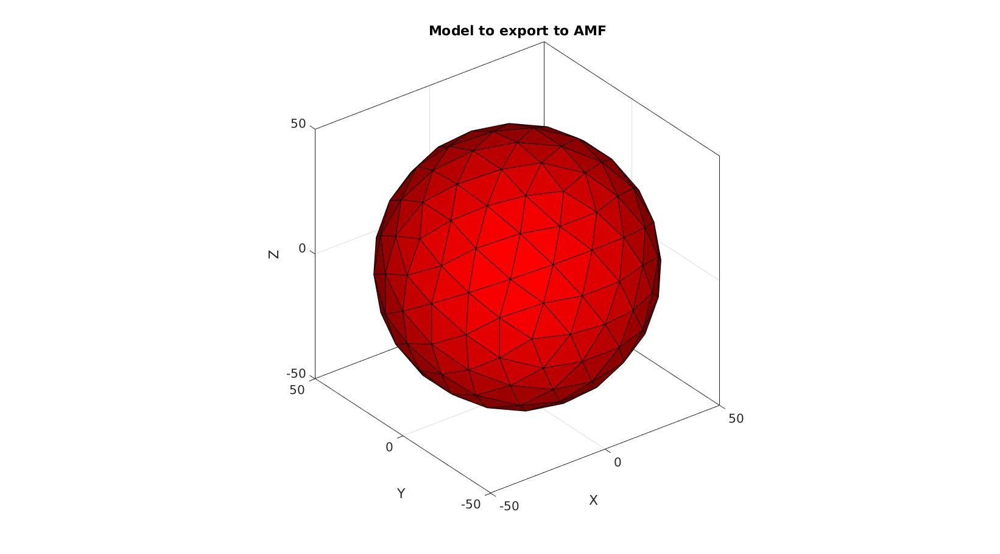

amfStruct2xml
Below is a demonstration of the features of the amfStruct2xml function
Contents
clear; close all; clc;
Syntax
[domNode]=amfStruct2xml(amf,fileName,optionStruct);
Description
This function provides the basis for coding AMF files.
Example:
Create example mesh
[F,V]=geoSphere(2,50); %Faces and vertices c=[1 0 0]; %RGB Color volume1_Name='sphere'; material1_Name='sphere material';
cFigure; title('Model to export to AMF') gpatch(F,V,c); axisGeom; camlight headlight; drawnow;
Define file name
defaultFolder = fileparts(fileparts(mfilename('fullpath'))); savePath=fullfile(defaultFolder,'data','temp'); fileName=fullfile(savePath,'tempModel.amf');
Create AMF structure
% Define AMF units and version amf.ATTR.unit='mm'; %Set units amf.ATTR.version='1.1'; %Set AMF version % Add optional metadata here amf.metadata{1}.ATTR.type='name'; amf.metadata{1}.VAL='Sphere mesh'; amf.metadata{2}.ATTR.type='author'; amf.metadata{2}.VAL='GIBBON'; % object definition %-> vertices amf.object{1}.ATTR.id=1; for q=1:1:size(V,1) %Loop over all vertices amf.object{1}.mesh.vertices.vertex{q}.coordinates.x=V(q,1); amf.object{1}.mesh.vertices.vertex{q}.coordinates.y=V(q,2); amf.object{1}.mesh.vertices.vertex{q}.coordinates.z=V(q,3); end %-> volume -> triangle amf.object{1}.mesh.volume{1}.ATTR.materialid=1; amf.object{1}.mesh.volume{1}.metadata{1}.ATTR.type='name'; amf.object{1}.mesh.volume{1}.metadata{1}.VAL=volume1_Name; for q=1:1:size(F,1) %Loop over all triangles (note zero indexing hence -1) amf.object{1}.mesh.volume{1}.triangle{q}.v1=F(q,1)-1; amf.object{1}.mesh.volume{1}.triangle{q}.v2=F(q,2)-1; amf.object{1}.mesh.volume{1}.triangle{q}.v3=F(q,3)-1; end % material amf.material{1}.ATTR.id=1; amf.material{1}.metadata.ATTR.type='name'; amf.material{1}.metadata.VAL=material1_Name; amf.material{1}.color.r=c(1); amf.material{1}.color.g=c(2); amf.material{1}.color.b=c(3);
Export xml
amfStruct2xml(amf,fileName);
zip file
[pathName,fileNameClean,c]=fileparts(fileName);
zipName=fullfile(pathName,[fileNameClean,'.zip']);
zip(zipName,fileName);
movefile(zipName,fileName);